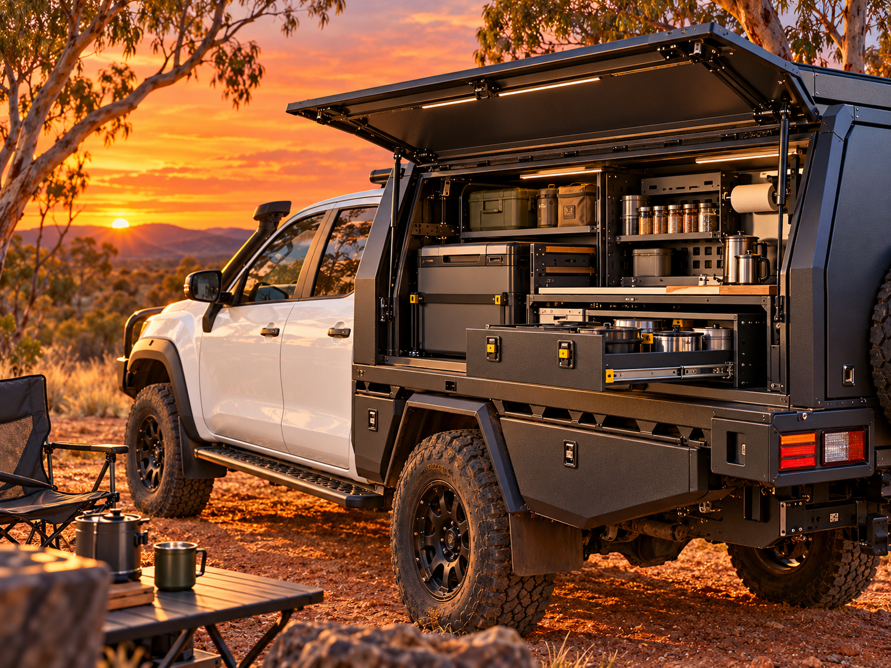

Cut with precision.
Laser cutting and CNC bending are part of our supplier’s documented fabrication process.
WORK. EXPLORE. REPEAT.
Our starting focus is modular canopy storage.
Customise what you have, or build a complete setup.
Range preview · Supplier catalogue photography. Final GTW selection, fitment and availability to be confirmed.
No gear matches that search. Try a different word or category.

Setup inspiration · concept imageYOUR GEAR. YOUR ROUTINE.
Customise your existing canopy, or build a whole new setup.
Start with one storage module, add more as you go, or put the whole package together at once. As your needs change, rearrange the modules and change the layout to suit the way you work and travel.
We will also offer trays and canopies, with flat-pack self-install options or installation by us. Choose your base, then build the storage around your needs.
Tell us how you use your ute and save a brief we can work from.
BEHIND THE GEAR
From the first cut to the finish,
the way it is made matters.
Laser cutting and CNC bending are part of our supplier’s documented fabrication process.
Powder-coated finishes feature across the supplier’s canopy and tray range.
Rubber compression seals help keep dust out of our canopies, so the outback stays outside.
Supplier-listed details; final GTW product specifications are being confirmed.
CAMPERS FIRST
We love the bush. We just don’t think camping needs to be hard work.
From swags beside the ute on work trips out west, to family tents, camper trailers and a big off-road caravan with bunks for the kids—we’ve tried a few setups. These days, our perfect is a compact rig where everything has its place, with free camps and remote spots ahead.
We’ve bought the cheap gear that broke and the gadgets we didn’t need. Now we focus on fewer, better things that earn their place, trip after trip.
That’s what drives GTW Outback: making it easier to get away, disconnect from the hustle and connect with nature.
Read our story ↗Gear that works. Out and back.
TAKE IT WITH YOU
The sunset collection.
Our current merchandise concepts.
WE WANT YOU TO COUNT ON IT
Gear you can depend on.
Support you can talk to.
Our direction is straightforward support when something goes wrong. The warranty’s coverage, process and replacement terms are still being developed for launch.
This local trial does not offer a final warranty policy.
Your purchase details, product information and a few clear photos are a useful starting point for a support conversation.
OUT THERE, TOGETHER
We want to see your gear out there.
At work, off the beaten track, and everywhere in between. Share the setups, the places and the days worth remembering.